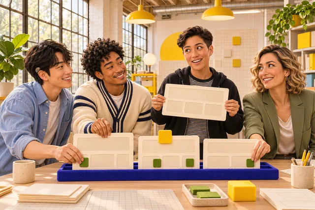
Study 001
The component table
Four web designers assemble the pieces of a homepage on a low workshop table.
Jae, Elijah, Kai, Soraya
Read the art direction and browse 100 Shared campaign studies across ten industries. Open each study for its cast, prompt, and download.
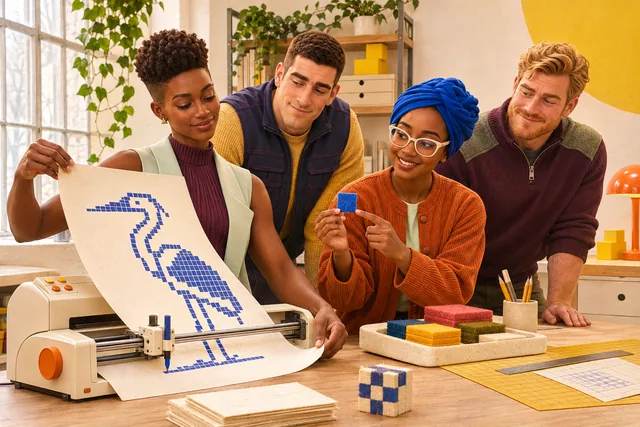
No matches. Try another word or clear the filters.

Study 001
Four web designers assemble the pieces of a homepage on a low workshop table.
Jae, Elijah, Kai, Soraya
Study 002
Four illustrators lift a paper strip from a plotter while studying the first printed graphic.
Aissatou, Andrej, Sakina, Soren
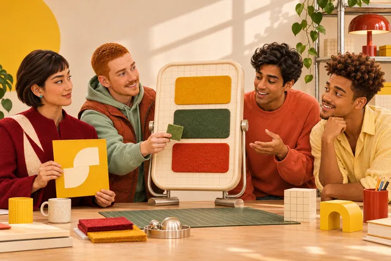
Study 003
Four collaborators test a physical app prototype on a bright stage.
Zoya, Arlo, Dev, Luca
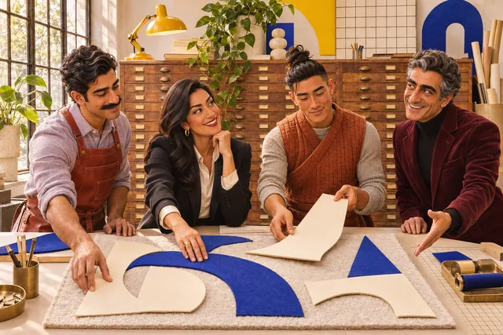
Study 004
Four type designers compare paper letterforms beside wide shallow drawers.
Ishaan, Ximena, Dawa, Aram
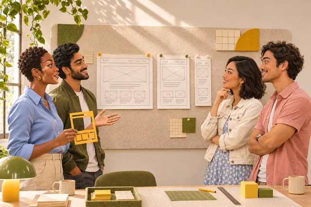
Study 005
Four web builders align different-size layout sketches on a felt wall.
Sade, Arjun, Ploy, Noah
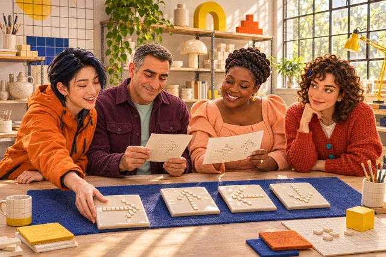
Study 006
Four design-system makers compare a set of raised pixel icons.
Min, Bahram, Amara, Noelia
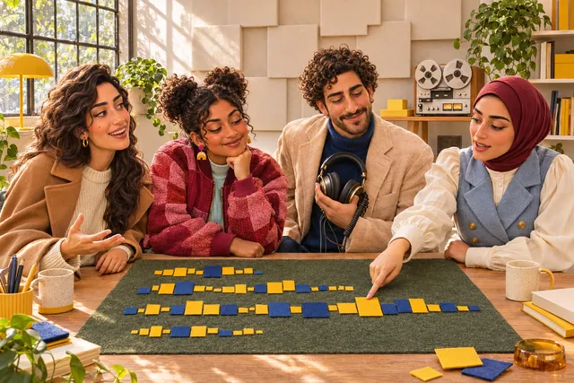
Study 007
Four sound designers arrange a physical map of a recorded conversation.
Layla, Saanvi, Mazin, Nahla
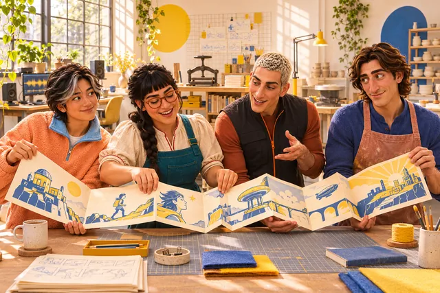
Study 008
Four story artists spread a continuous accordion prototype across a print table.
Bao, Citlali, Ozan, Dimitri
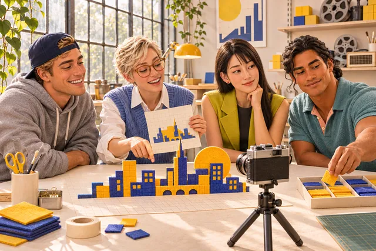
Study 009
Four animators plan a stop-motion sequence using stepped felt mosaics.
Tyler, Iris, Seoyeon, Keanu
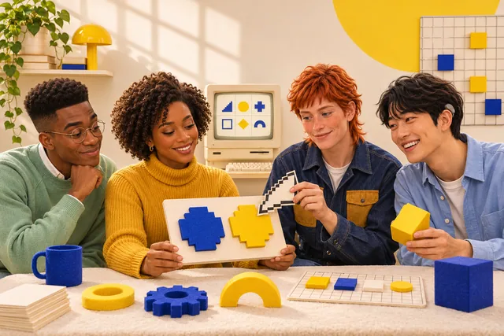
Study 010
Four product designers test a high-contrast navigation prototype.
Chidi, Maya, Anouk, Jae
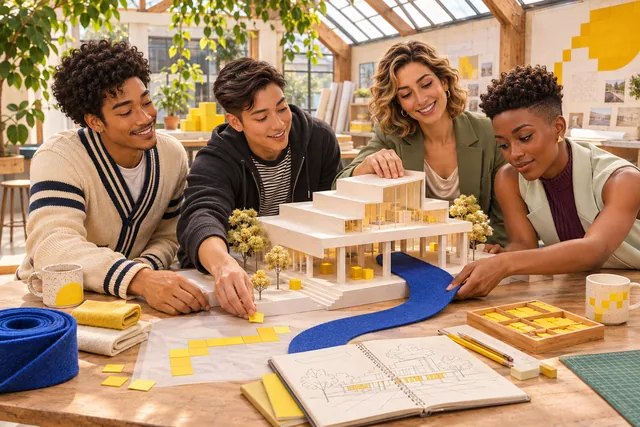
Study 011
Four designers test a stepped white-card library model by sliding a cobalt felt pedestrian route under the entrance canopy.
Elijah, Kai, Soraya, Aissatou
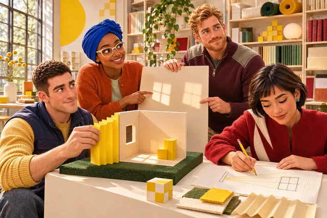
Study 012
Four designers use a small scale room and a paper screen to compare the shadows cast by different window openings.
Andrej, Sakina, Soren, Zoya
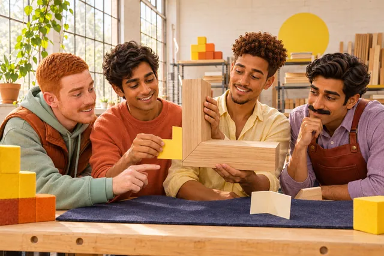
Study 013
Four workshop teammates compare a small paper joint with a full-scale timber corner prototype.
Arlo, Dev, Luca, Ishaan
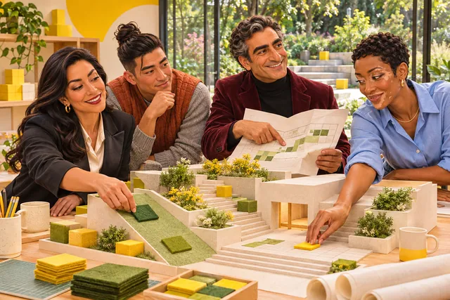
Study 014
Four planners move square markers along a tabletop model to check a route through a courtyard.
Ximena, Dawa, Aram, Sade
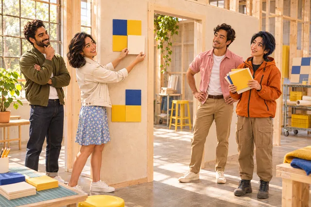
Study 015
Four teammates try two sign heights against a full-size doorway mockup.
Arjun, Ploy, Noah, Min
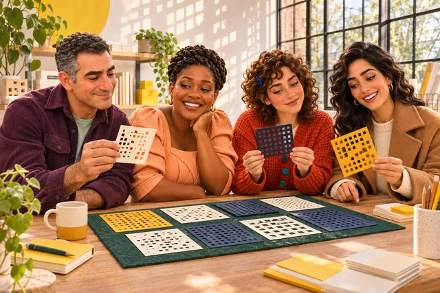
Study 016
Four teammates compare perforated paper screen samples against real light from a tall window.
Bahram, Amara, Noelia, Layla
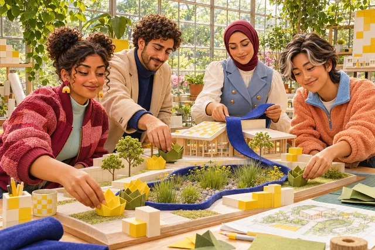
Study 017
Four landscape designers arrange paper planting blocks and a blue felt drainage path around a building model.
Saanvi, Mazin, Nahla, Bao
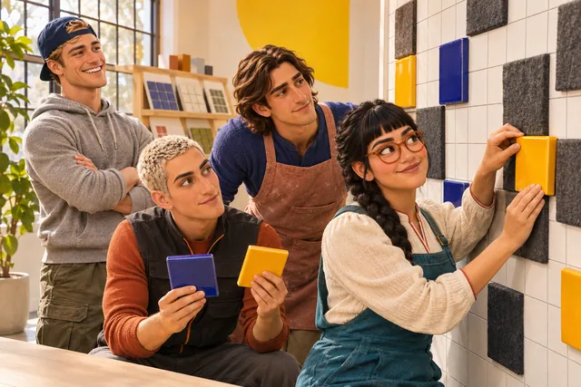
Study 018
Four colleagues make a full-size wall pattern from alternating ceramic and felt squares.
Citlali, Ozan, Dimitri, Tyler
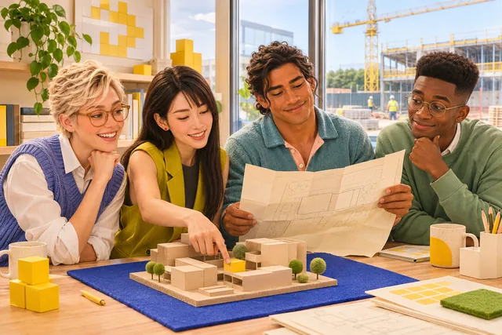
Study 019
Four site teammates compare a folded site plan with a cardboard building model in a temporary office.
Iris, Seoyeon, Keanu, Chidi
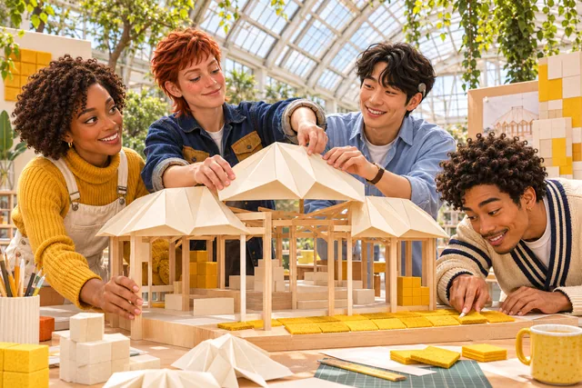
Study 020
Four makers test a modular paper roof against the frame of a small timber pavilion model.
Maya, Anouk, Jae, Elijah
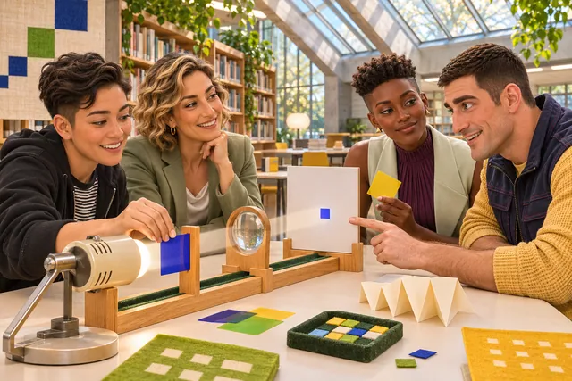
Study 021
Four collaborators lean over a library light table, testing how differently colored paper squares project through a simple lens.
Kai, Soraya, Aissatou, Andrej
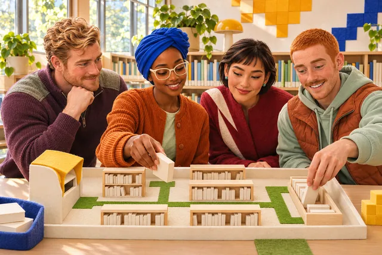
Study 022
Four library staff compare book-return routes on a tabletop model with felt lanes and plain paper book blocks.
Sakina, Soren, Zoya, Arlo
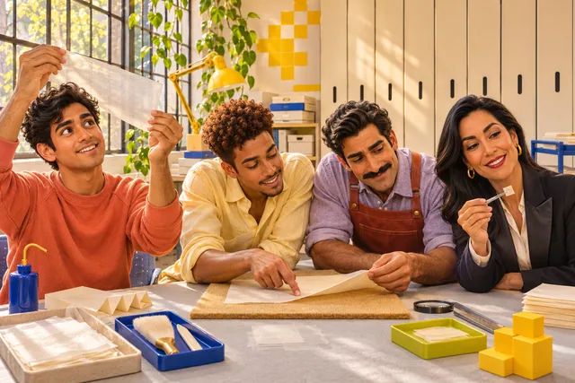
Study 023
Four archivists compare a page repair sample at a long conservation bench.
Dev, Luca, Ishaan, Ximena
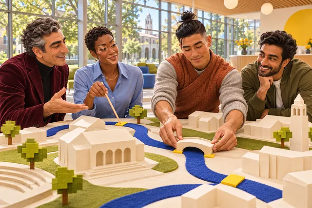
Study 024
Four educators walk through an accessible campus route on a large tactile model.
Dawa, Aram, Sade, Arjun
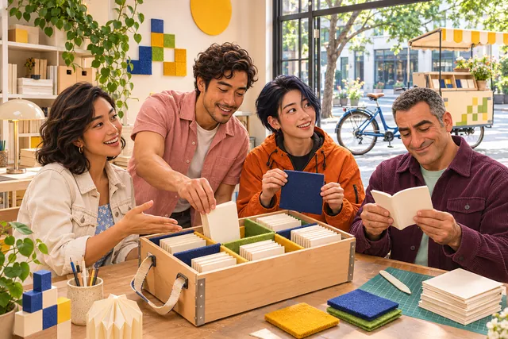
Study 025
Four librarians assemble a portable reading kit from folded paper pockets and square felt dividers.
Ploy, Noah, Min, Bahram
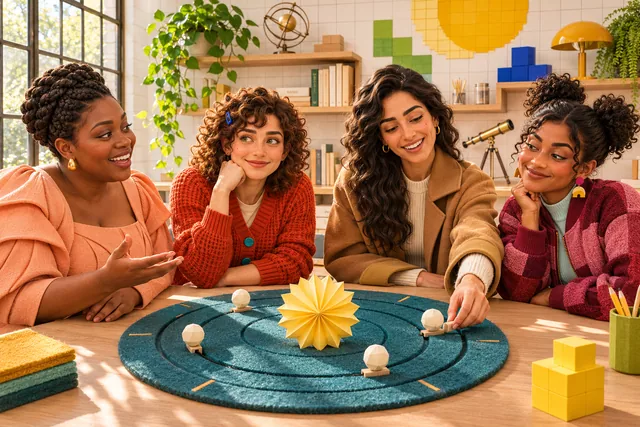
Study 026
Four teachers test folded paper orbit models at a science education center.
Amara, Noelia, Layla, Saanvi
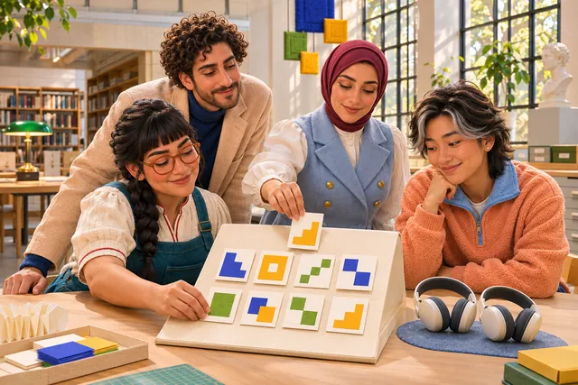
Study 027
Four museum educators arrange tactile shapes for an interactive listening station.
Mazin, Nahla, Bao, Citlali
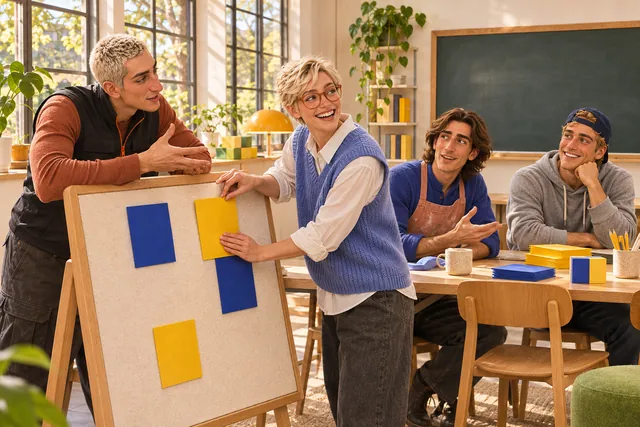
Study 028
Four adult educators test a hands-on fraction activity with large square paper pieces.
Ozan, Dimitri, Tyler, Iris
Study 029
Four literacy educators review how paper booklets sit in an adjustable tabletop display.
Seoyeon, Keanu, Chidi, Maya
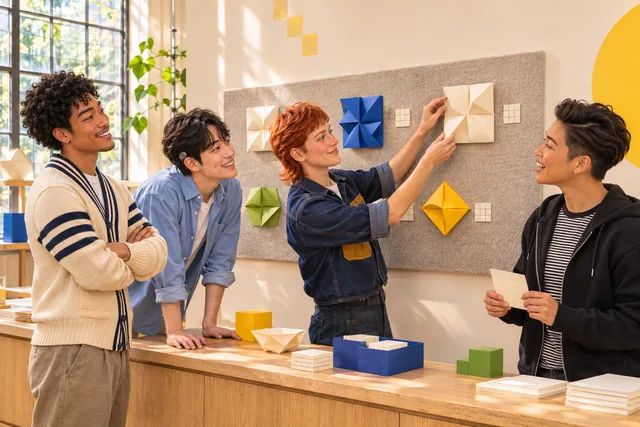
Study 030
Four student mentors rehearse a small paper exhibition before visitors arrive.
Anouk, Jae, Elijah, Kai
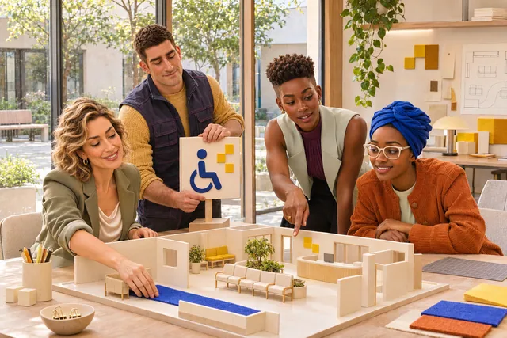
Study 031
Four teammates reposition a short strip of felt and a paper sign on a scale model of a clinic waiting room.
Soraya, Aissatou, Andrej, Sakina
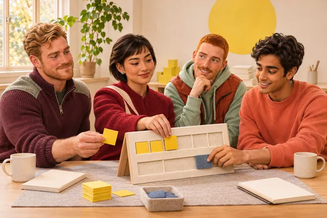
Study 032
Four teammates arrange colored square cards on a mock handoff board in an empty consultation room.
Soren, Zoya, Arlo, Dev
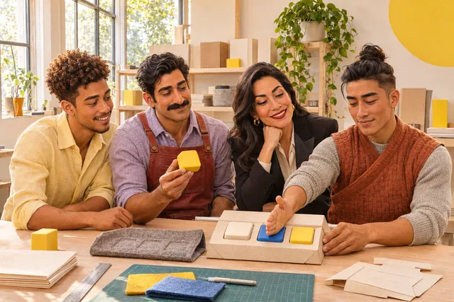
Study 033
Four teammates try differently sized square buttons on a tabletop accessibility prototype.
Luca, Ishaan, Ximena, Dawa
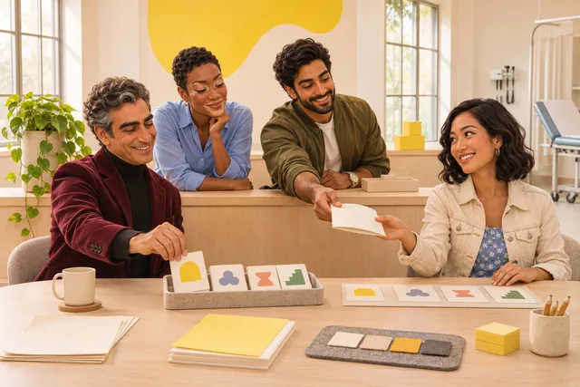
Study 034
Four teammates test the order of reusable intake cards at a daylight-filled reception desk.
Aram, Sade, Arjun, Ploy
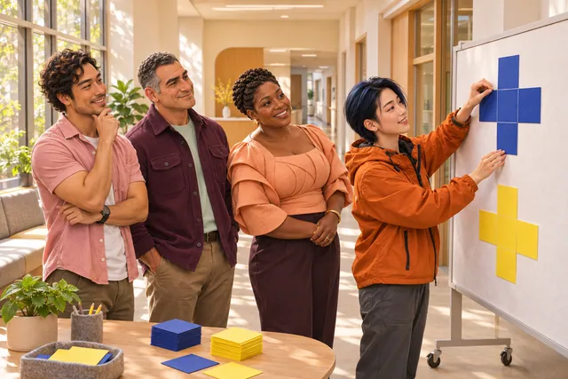
Study 035
Four teammates compare two square-tile wayfinding symbols on a board in a sunlit hallway.
Noah, Min, Bahram, Amara
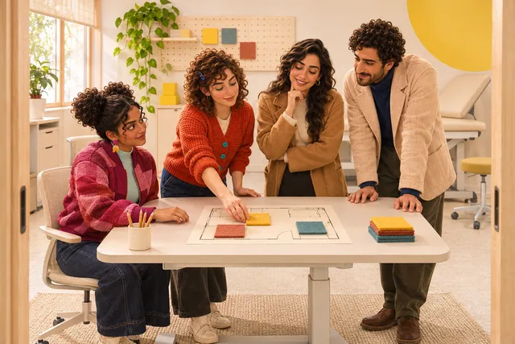
Study 036
Four teammates test the clear space around a height-adjustable surface using a blank floor plan and felt squares.
Noelia, Layla, Saanvi, Mazin
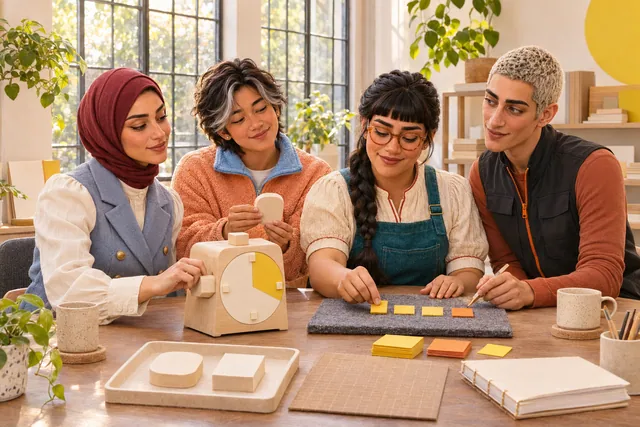
Study 037
Four teammates compare tactile knobs and square markers for a physical reminder timer.
Nahla, Bao, Citlali, Ozan
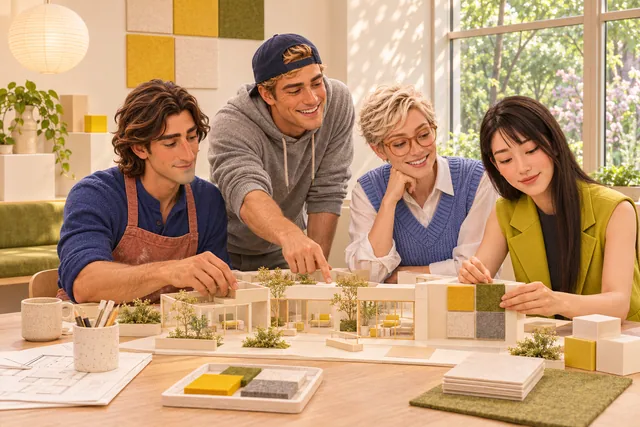
Study 038
Four teammates position a felt-tile wall and pieces of a scale model for a quiet seating area.
Dimitri, Tyler, Iris, Seoyeon
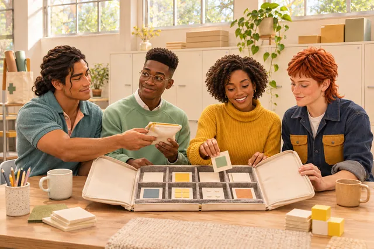
Study 039
Four teammates arrange demonstration cards and felt pouches in an open mock home-visit kit.
Keanu, Chidi, Maya, Anouk
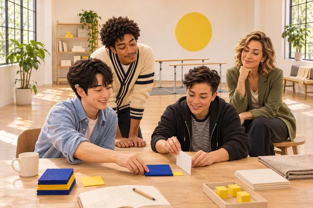
Study 040
Four teammates align felt markers on a worktable in a rehab studio with practice rails in the background.
Jae, Elijah, Kai, Soraya
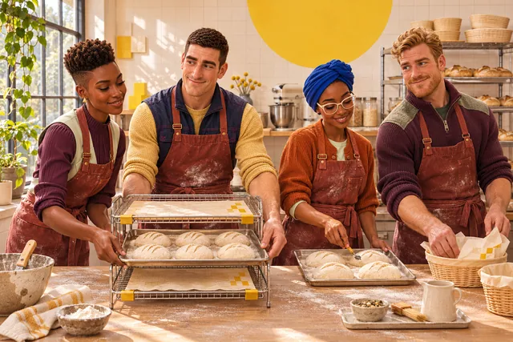
Study 041
In a sunlit bakery, Aissatou slides a sheet pan of scored dough into the center of a cooling rack while Andrej steadies the tray, Sakina checks a second pan, and Soren stages a paper-lined basket.
Aissatou, Andrej, Sakina, Soren
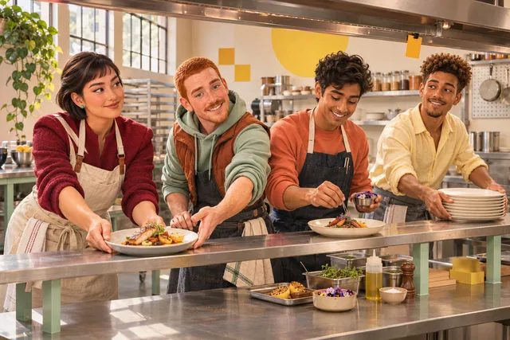
Study 042
Zoya sets a finished plate on a kitchen pass as Arlo reaches for it, Dev adds a garnish to another plate, and Luca moves a stack of clean plates into reach.
Zoya, Arlo, Dev, Luca
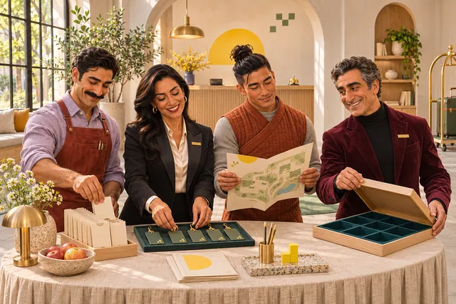
Study 043
Ishaan places blank key sleeves on a hotel welcome table while Ximena lines up reusable room keys, Dawa unfolds a paper site map, and Aram opens a shallow tray.
Ishaan, Ximena, Dawa, Aram
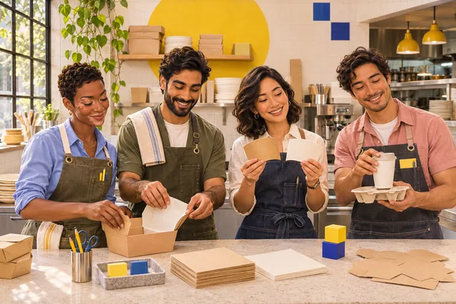
Study 044
Sade assembles a folded lunch box while Arjun nests a paper insert, Ploy compares two blank sample sleeves, and Noah holds a takeaway cup against the tray opening.
Sade, Arjun, Ploy, Noah
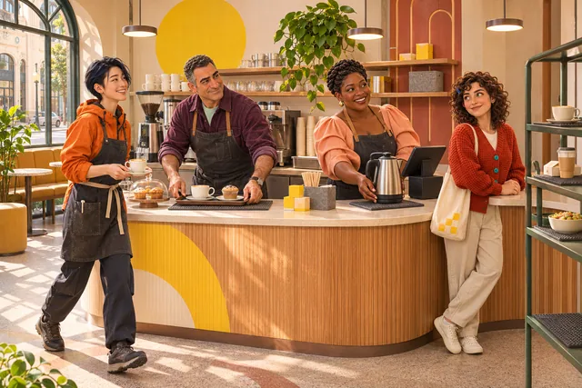
Study 045
Min carries a cup to a collection shelf while Bahram adjusts the tray position, Amara sets a kettle beside the till, and Noelia watches from the customer side of the counter.
Min, Bahram, Amara, Noelia
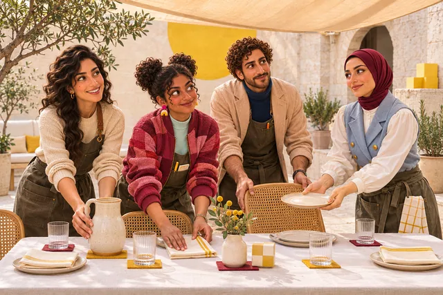
Study 046
Layla places a ceramic water jug on a terrace table while Saanvi aligns a napkin, Mazin straightens a chair, and Nahla hands over a plate.
Layla, Saanvi, Mazin, Nahla
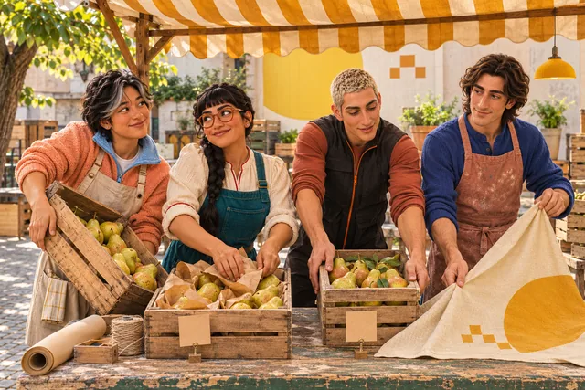
Study 047
Bao tilts a wooden crate of pears toward the market aisle as Citlali tucks paper around the fruit, Ozan positions a second crate, and Dimitri lifts the corner of a square cloth.
Bao, Citlali, Ozan, Dimitri
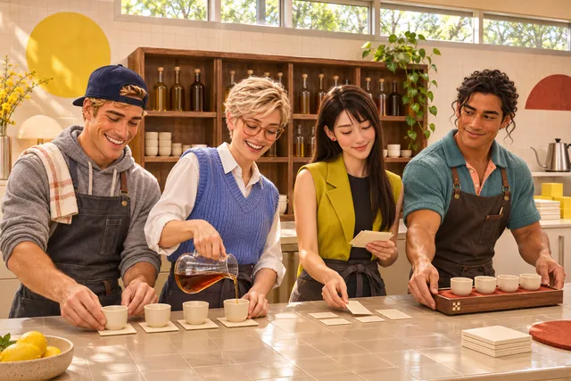
Study 048
Tyler lines up four small cups while Iris pours a measure from a carafe, Seoyeon divides paper tasting slips, and Keanu sets down a wooden flight tray.
Tyler, Iris, Seoyeon, Keanu
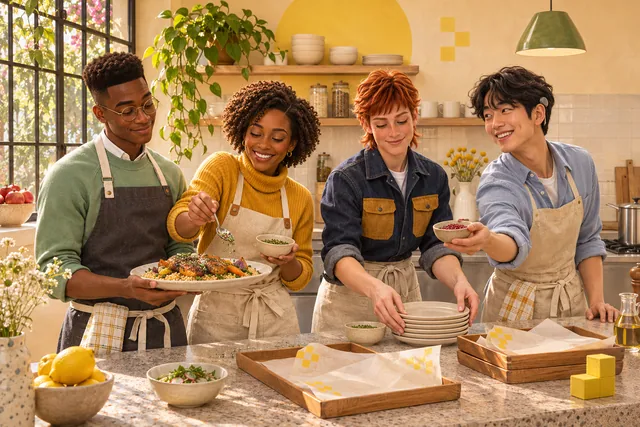
Study 049
Chidi holds a platter steady while Maya adds a final spoonful, Anouk arranges clean side plates, and Jae passes a small bowl of garnish.
Chidi, Maya, Anouk, Jae
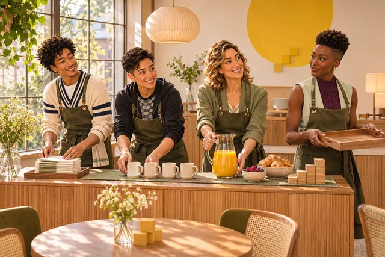
Study 050
Elijah arranges folded paper napkins while Kai aligns a line of cups, Soraya places a pitcher, and Aissatou brings a clean serving tray to the breakfast sideboard.
Elijah, Kai, Soraya, Aissatou
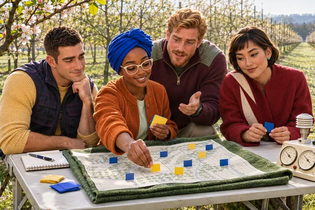
Study 051
Four orchard stewards study a long row of apple trees while placing colored squares on a hand-drawn frost map.
Andrej, Sakina, Soren, Zoya
Study 052
Four greenhouse colleagues inspect the fit of a seedling tray beside a grid of paper planting markers.
Arlo, Dev, Luca, Ishaan
Study 053
The seed library team tips dried beans into compartmented paper trays to compare varieties.
Ximena, Dawa, Aram, Sade
Study 054
Four field technicians follow a ribbon of blue felt through a raised watershed model.
Arjun, Ploy, Noah, Min
Study 055
Four farm colleagues line up square spare-parts labels as they compare a repaired irrigation connector.
Bahram, Amara, Noelia, Layla
Study 056
Four researchers compare sample cups beside a portable grid at the edge of a field.
Saanvi, Mazin, Nahla, Bao
Study 057
Four gardeners decide where to place a yellow tile on a map of their rooftop beds.
Citlali, Ozan, Dimitri, Tyler
Study 058
Four vineyard colleagues move paper blocks on a slope map set beside the vines.
Iris, Seoyeon, Keanu, Chidi
Study 059
Four gardeners arrange colored sample cards across a pollinator plot plan beside the beds.
Maya, Anouk, Jae, Elijah
Study 060
Four technicians observe a water drop from a demonstration emitter over rows of propagation cells.
Kai, Soraya, Aissatou, Andrej
Study 061
Four collaborators compare an unpowered cream housing, a felt-backed gauge and a paper clearance pattern at a component-inspection bench.
Sakina, Soren, Zoya, Arlo
Study 062
Four collaborators check a new wooden assembly fixture against a small cream spacer while a folded paper template rests on the bench.
Dev, Luca, Ishaan, Ximena
Study 063
Four colleagues practice arranging inert foam packages on a low training cart with a square-grid layout.
Dawa, Aram, Sade, Arjun
Study 064
Four teammates compare an open return carton, blank paper sleeves and sorting trays at a raised workbench.
Ploy, Noah, Min, Bahram
Study 065
Four dispatch teammates reposition colored tiles on a paper route plan in a sunny dispatch room.
Amara, Noelia, Layla, Saanvi
Study 066
Four colleagues test how a small cream product sits inside a plain folding carton at a packing workshop.
Mazin, Nahla, Bao, Citlali
Study 067
Four colleagues test slightly different arrangements of small model cartons on a tabletop loading platform.
Ozan, Dimitri, Tyler, Iris
Study 068
Four rail dispatch teammates review colored parcel blocks on a long felt scheduling rail next to a window.
Seoyeon, Keanu, Chidi, Maya
Study 069
Four reviewers compare the surfaces of two small unmarked cream parts under a diffused inspection lamp.
Anouk, Jae, Elijah, Kai
Study 070
Four repair colleagues decide which unpowered components to keep beside a small cream casing and square felt bins.
Soraya, Aissatou, Andrej, Sakina
Study 071
Four people set a book on an angled wooden support and adjust a square paper spacer inside a sunny bookshop.
Soren, Zoya, Arlo, Dev
Study 072
Four people place frosted bottles on a felt-lined countertop tray and compare how the caps line up.
Luca, Ishaan, Ximena, Dawa
Study 073
Four people compare fabric swatches with the collar and sleeve of a jacket at a cutting table.
Aram, Sade, Arjun, Ploy
Study 074
Four people arrange folded-paper steps and a simple ceramic object in a storefront window display.
Noah, Min, Bahram, Amara
Study 075
Four people test the opening and fit of a square cardboard insert around a ceramic cup.
Noelia, Layla, Saanvi, Mazin
Study 076
Four people test the spacing of blank shelf cards beside rows of refill jars.
Nahla, Bao, Citlali, Ozan
Study 077
Four people compare laces, felt lining and a mock sole around a prototype shoe.
Dimitri, Tyler, Iris, Seoyeon
Study 078
Four people compare a ceramic pitcher's handle with a second curved handle and a square paper gauge.
Keanu, Chidi, Maya, Anouk
Study 079
Four people arrange display blocks, crates and paper packets under a striped market canopy.
Jae, Elijah, Kai, Soraya
Study 080
Four people inspect a loose seam on a canvas tote and compare swatches for a repair patch.
Aissatou, Andrej, Sakina, Soren
Study 081
Four agents position a microphone and listen through headphones in a small recording booth.
Zoya, Arlo, Dev, Luca
Study 082
Four agents lift a cobalt print from a screen-printing frame and compare it with a paper sample.
Ishaan, Ximena, Dawa, Aram
Study 083
Four agents pin felt patches onto a stage jacket laid across a costume worktable.
Sade, Arjun, Ploy, Noah
Study 084
Four agents pass a blank cue card across a community radio mixing desk.
Min, Bahram, Amara, Noelia
Study 085
Four agents adjust a reflector and felt prop on an outdoor filming set.
Layla, Saanvi, Mazin, Nahla
Study 086
Four agents move paper scenery and check its shadows in a model theatre.
Bao, Citlali, Ozan, Dimitri
Study 087
Four agents position a folded-paper object and adjust the lights for a photo shoot.
Tyler, Iris, Seoyeon, Keanu
Study 088
Four agents measure and position felt panels on a gallery wall.
Chidi, Maya, Anouk, Jae
Study 089
Four agents sort image cards into a sequence on a long felt board.
Elijah, Kai, Soraya, Aissatou
Study 090
Four agents place a stepped exhibit panel and inspect it from the visitor path.
Andrej, Sakina, Soren, Zoya
Study 091
Four agents compare a tactile boarding marker with a full-scale bus stop bench mockup.
Arlo, Dev, Luca, Ishaan
Study 092
Four volunteers trace a loose seam on a canvas tote at a library repair café.
Ximena, Dawa, Aram, Sade
Study 093
Four agents align a blue wayfinding arrow at the fork of a park path.
Arjun, Ploy, Noah, Min
Study 094
Four agents arrange colored paper squares on a neighborhood noticeboard without blocking any of the lower slots.
Bahram, Amara, Noelia, Layla
Study 095
Four organizers fit paper chair cutouts around a square floor plan for a neighborhood assembly.
Saanvi, Mazin, Nahla, Bao
Study 096
Four agents compare a tabletop color mockup with the first square tiles of a community mural.
Citlali, Ozan, Dimitri, Tyler
Study 097
Four agents group flashlights and battery packs into labeled-by-color felt trays during a community readiness workshop.
Iris, Seoyeon, Keanu, Chidi
Study 098
Four agents test how a lime felt path connects three play areas in a tabletop playground model.
Maya, Anouk, Jae, Elijah
Study 099
Four agents move square route markers between pickup and delivery points on a tabletop map.
Kai, Soraya, Aissatou, Andrej
Study 100
Four agents shift a paper canopy and a cobalt path on a scale model of a public square.
Sakina, Soren, Zoya, Arlo
Make a shared decision visible. Show a group of agents doing real work in bright settings, with paper, felt and square pixels in the scene.
The work is shared and the next step is visible. Show four commissioned Shared agents working through a concrete decision together. The viewer should be able to point to the artifact they are making, understand what changed and tell who is participating. Aim for the moment one person slides a piece into place and the others can see how it fits.
The photographs are fictional studies with Shared AI characters. In public copy, identify them as AI agents or as a Shared campaign illustration wherever the context might imply they are real staff, customers, patients or testimonials.
Each industry needs ten scenes that explore different actions and settings. Think in terms of decision points rather than outfits. Gather views that can support a campaign, editorial article or product example.
For each shot, describe the industry, setting, one action, the object that makes the action intelligible, the group and the framing. Attach one numbered identity portrait per cast member and name them in that order. Use the Shared daylight and materials direction with the specific framing needed for the shot. Ask for a single frame. When making a variation, change one or two qualities at a time, such as viewpoint or daylight direction, and repeat the identity and framing requirements.
Try the 2.30:1 wide crop and 1.52:1 phone crop on this campaign frame. Keep the group and its work visible. Use a framed landscape master if the narrower crop loses a person.

Use this layout for a searchable collection of photographs. Group related studies under a descriptive heading and keep captions and cast credits with their images.
Production photographs, artwork and video from Shared’s paper workshop.


Faces in social posts
Keep every face fully inside the image area and clear of every graphic element. Check each export at its final aspect ratio.
Open the Instagram examples